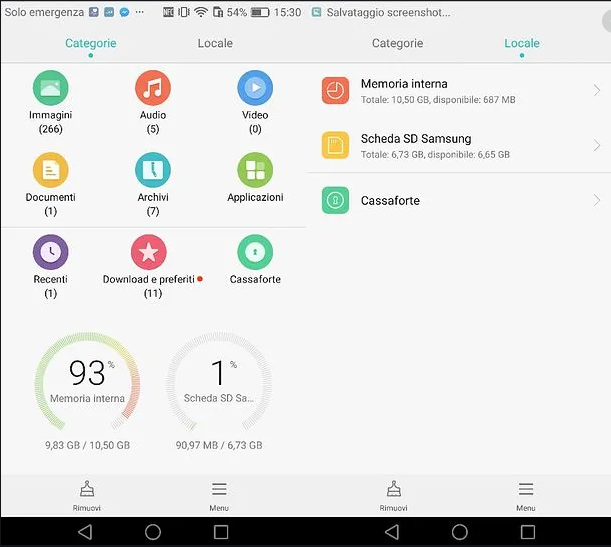
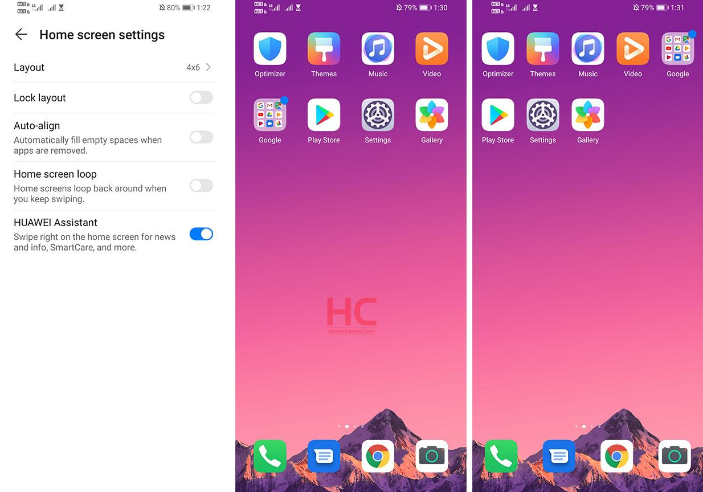
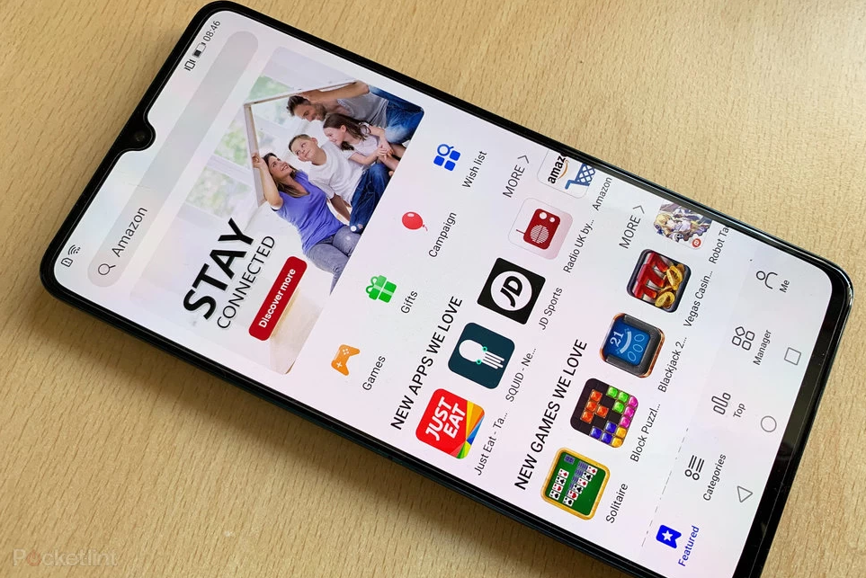

Indietro
Funzioni del Sistema Operativo
Gestore File

Questa app consente di riordinare i file presenti sulla memoria interna e esterna del telefono
Cambiare aspetto della schermata Home

E' possibile personalizzare la schermata Home in molti aspetti.
Ad esempio, il numero di icone, la posizione delle icone, attivare o disattivare il loop delle schermate home e molto altro
Dual SIM
E' possibile inserire 2 carte SIM e ricevere ed effettuare chiamate in tutte e due contemporaneamente
App Gallery

E' un alternativa al Play Store. E' possibile installare applicazioni disponibili solo su telefono Huawei